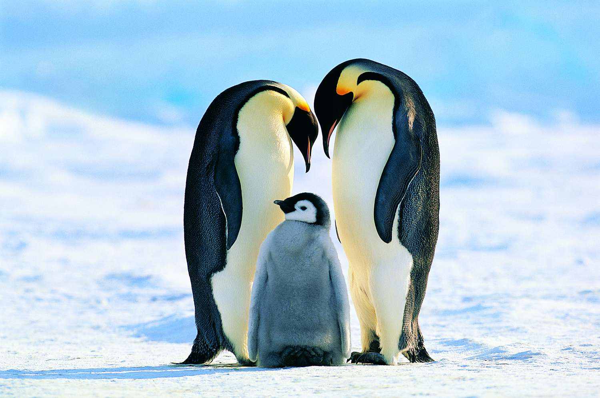
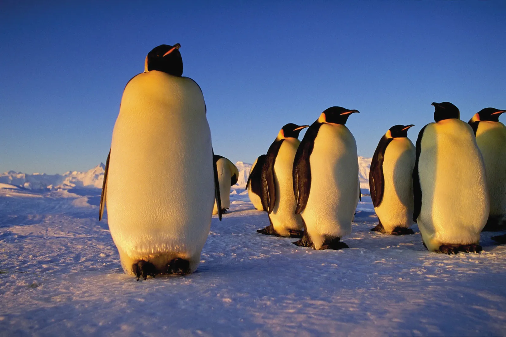
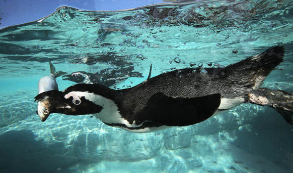
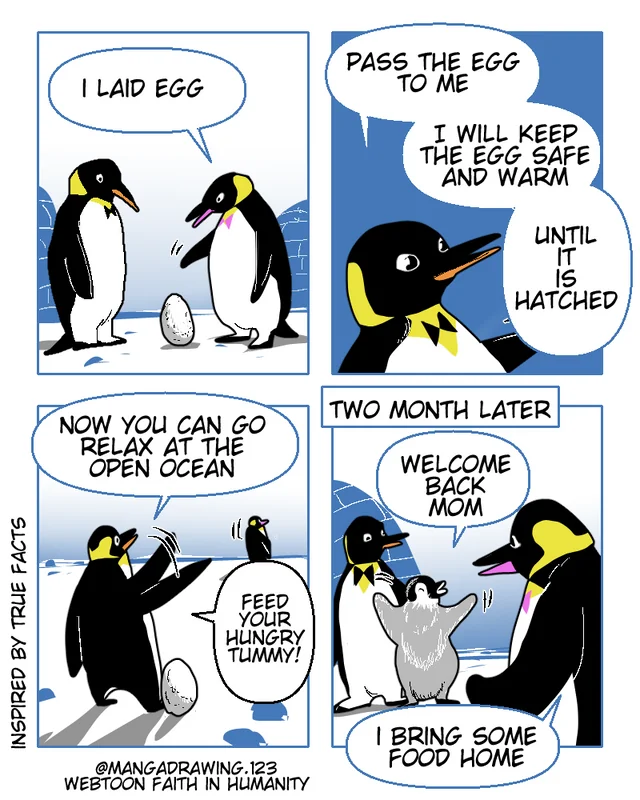

ARTIC PENGUIN
-

Though they are birds, penguins have flippers instead of wings. They cannot fly and on land they waddle walking upright—though when snow conditions are right they will slide on their bellies. In the water they are expert swimmers and divers, and some species can reach speeds of up to 15 miles per hour. The penguin’s distinctive coloring—black body with white belly—helps camouflage the bird in the water as it searches for meals of small shrimp, fish, crabs and squid.
-

Weight: 2 pounds to 80 pounds.
-

primary prey on fish, clams, molluscs, worms, snails, soft shell crabs, shrimp and sea cucumbers
-

The male penguin takes care of the egg once it is layed, then the mother heads off for a 9 week feeding time scheme